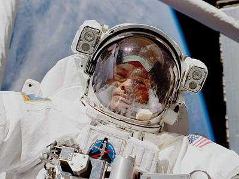
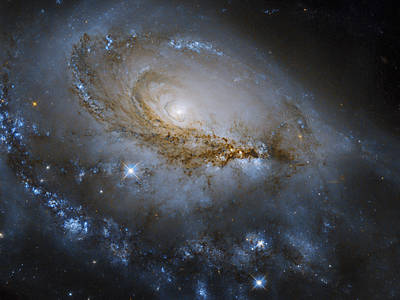

Golden DART’s Galactic Unboxing
John W. Young’s Lunar Salute
Endeavour Gets a Piggyback Ride
Frank Rubio Trains for Spacewalk
Michael E. López-Alegría Poses During Spacewalk
A Bird's-Eye View of the Vehicle Assembly Base
Hubble Studies a Spectacular Spiral
Snowcapped Mountains in Western China
Setting the Clock on a Stellar Explosion
Reflecting on President Kennedy's Moonshot Speech

Mediterranean Cities Light Up the Night
NASA's Hubble Finds Spiraling Stars, Providing Window into Early Universe

Voyager 1’s Mission to the Outer Planet Begins
A Cosmic Tarantula, Caught by NASA’s Webb